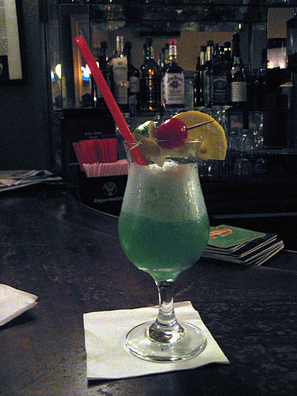

The Blue Hawaii is a tropical cocktail made of rum, pineapple juice, Blue Curaçao, sweet and sour mix, and sometimes vodka. It should not be confused with the similarly named Blue Hawaiian cocktail (also known as the Swimming Pool cocktail) that contains creme of coconut instead of sweet and sour mix.
